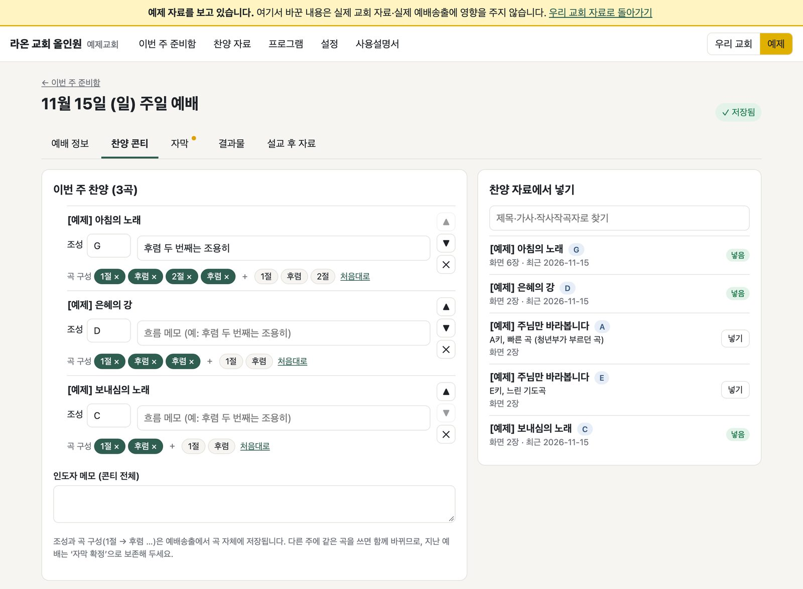
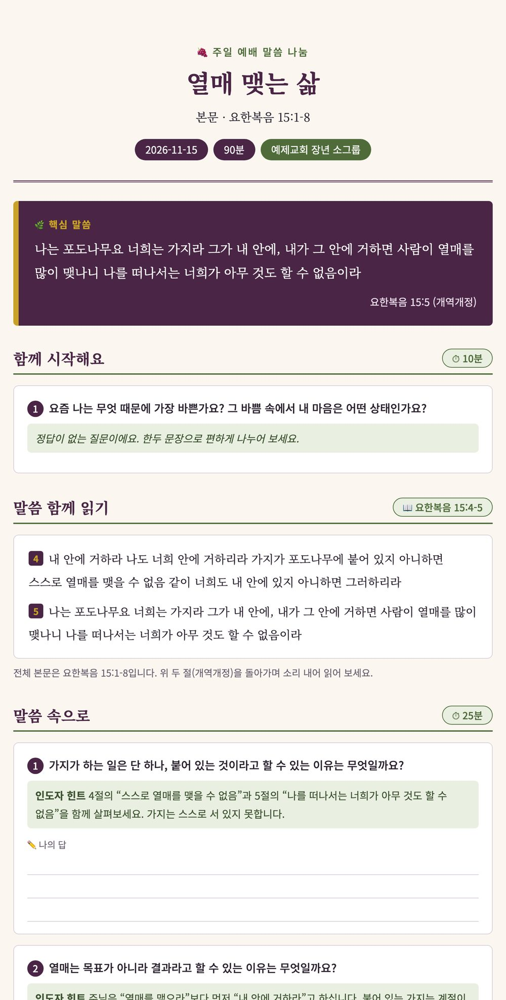
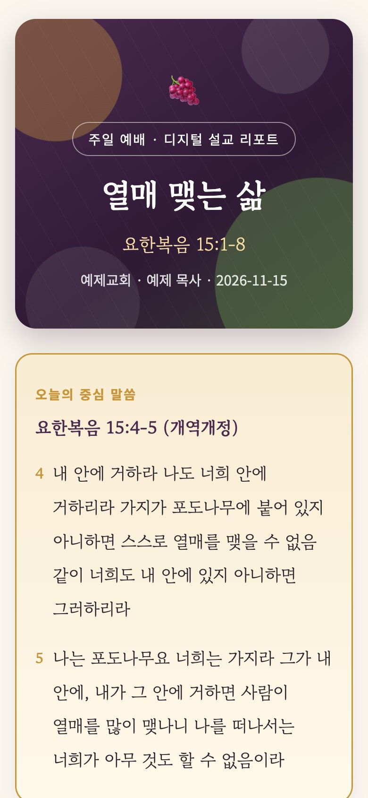
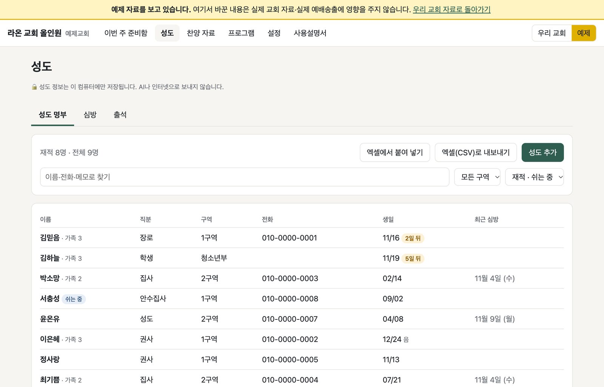
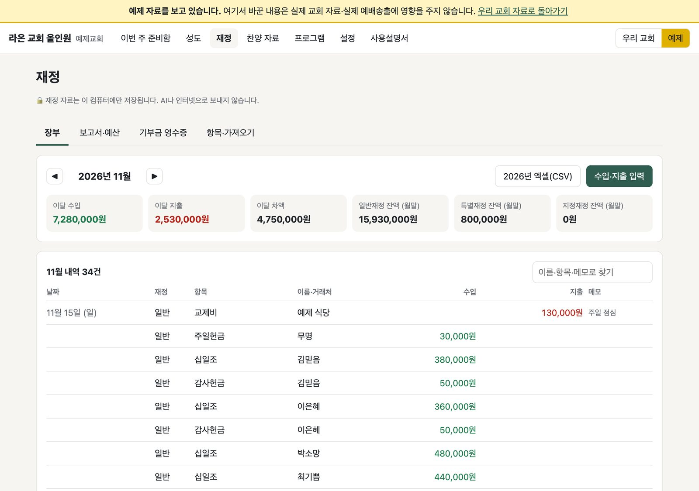
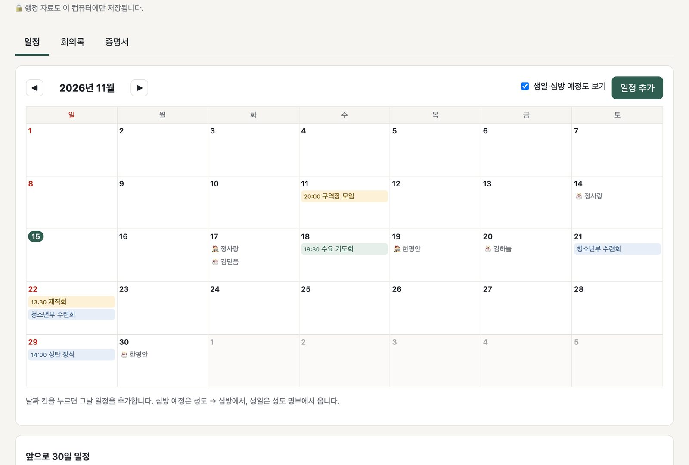

혼자 목회해도,
매주 준비를 혼자 다 하지 않도록
본문과 설교 제목을 한 번만 넣으면 예배 자막, 찬양 콘티, 설교 인포그래픽, 블로그 글, 소그룹 나눔지까지 이어집니다. 성도 명부·재정·회의록도 한곳에서. 작은 교회를 위해 만든 무료 프로그램입니다.

처음 열면 이렇게 시작하세요
처음부터 우리 교회 자료를 넣지 않아도 됩니다. 예제 교회로 먼저 눌러 보세요. 예제에서 바꾼 것은 실제 자료에 아무 영향이 없습니다.
- 예제로 둘러보기첫 화면의 '예제 열기'. 지난주 예배가 미리 들어 있습니다
- 교회 정보 넣기오른쪽 위 '우리 교회'로 바꾸고 교회·목회자 이름
- 이번 주 예배 만들기본문·설교 제목·광고. 다음 주부터는 '지난주 예배 복사'
- 찬양 콘티곡을 넣고 순서·조성·곡 구성. 찬양 추천도 여기서
- 자막 확인예배송출 자막을 훑어보고 '자막 확정'
프로그램 위 메뉴 사용설명서에 화면 사진과 함께 자세히 나와 있습니다.
한 번 입력하면, 이어집니다
같은 본문과 제목을 다섯 군데에 따로 적지 않아도 됩니다.


🎵 찬양 콘티
곡을 넣고 순서·조성·곡 구성(1절 → 후렴)을 정합니다. 카톡용 콘티 글 복사와 인쇄도 됩니다.

📺 자막 확정
예배 직전 모습을 그대로 보관합니다. 나중에 곡이 바뀌어도 그 주 예배는 남고, 되돌릴 수 있습니다.

찬양 추천까지
함께 들어 있는 PraiseFlow 찬양 큐레이터가 본문과 설교 제목을 읽고 찬송가와 CCM을 추천합니다.
- 곡마다 추천 이유·분위기·유튜브·악보 링크
- 찬양 자료에 있는 곡은 콘티에 넣기 한 번
- 없는 곡은 새 곡으로 만들어 넣기 (가사는 예배송출에서)
설교가 끝난 뒤에도
설교 원고 하나로 성도와 나눌 자료를 만듭니다. 아래는 예시 원고로 실제로 만든 결과입니다.

🖼 설교 인포그래픽
대지·중심 말씀·핵심 단어·적용 체크리스트·기도문을 한 장의 웹페이지로. 링크나 파일로 나눕니다.

👥 소그룹 나눔지
장년(90분)·청소년(75분) 두 가지. 질문, 중보기도 표, 접히는 인도자 가이드. 인쇄하면 A4로.

✍️ 블로그 글
강단 말투를 읽는 글로 다듬어 줍니다. 글 복사로 네이버 블로그·티스토리에 붙여 넣으면 끝.
원고 하나가 세 가지 자료로
아래는 같은 예시 원고(요한복음 15장, 가상의 교회)로 만든 결과를 고치지 않고 그대로 올린 것입니다. 눌러서 직접 읽어 보세요. 인쇄 모양은 각 페이지에서 브라우저 인쇄(Ctrl+P / ⌘+P)로 볼 수 있습니다.
프로그램은 컴퓨터에 설치하지만, 만든 인포그래픽과 나눔지는 휴대폰에서도 보기 좋게 만들어집니다. 파일이나 링크로 성도들과 카카오톡에서 나눌 수 있습니다.

교회 살림도 한곳에서새 기능
예배 준비 말고도 혼자 챙기기 벅찬 일들을 같은 화면에 모았습니다. 모두 이 컴퓨터에만 저장되고 AI로 보내지 않습니다(회의록 AI 정리는 직접 누를 때만).

👥 성도 명부 · 심방 · 출석
가족 묶기, 엑셀 명단 붙여 넣기, 심방 기록·예정, 출석 체크. 홈 화면이 이번 주 생일·심방·3주 연속 결석을 알려 줍니다.

💰 재정
수입·지출 장부, 예산·결산 보고서 인쇄, 성도 명부 주소가 들어가는 기부금 영수증. 항목은 교회에 맞게 고칩니다.

📅 일정 · 구글 캘린더
교회 달력에 심방 예정·생일이 함께. 구글 캘린더 여러 개를 이어 두면 구글에 적은 일정도 여기 보입니다.
🎙 회의록 작성기 · 증명서
회의를 녹음하면 이 컴퓨터에서 받아 적고 AI가 내용·결정 사항·해야 할 일로 정리합니다. 교인·세례 증명서 발급 대장도.
한 주는 이렇게 흘러갑니다
AI와 프로그램이 받아 적고 정리하면, 목사님은 확인하고 고치는 일만 하시면 됩니다.
주중
- 본문·설교 제목 넣기
- 찬양 추천 받아 콘티 짜기
토요일
- 광고·대표 기도 정리
- 자막 훑어보고 '자막 확정'
주일
- 예배송출로 자막 송출
- 홈 화면에서 오늘 돌볼 분 확인
주일 이후
- 원고로 인포그래픽·나눔지·블로그 글
- 심방·출석·헌금 기록
할 수 있는 것
이미 쓰고 계신 프로그램을 새로 만들지 않고 한 화면에 이어 줍니다.
- 📋 이번 주 준비함할 일이 순서대로, '준비 이어하기' 한 번이면 남은 곳으로
- 🔁 지난주 예배 복사예배 순서와 광고를 이어받아 시작
- 📺 예배송출 자막 연결성경 봉독·말씀 선포·교회 소식·대표 기도 자막에 자동 반영
- 🎵 찬양 콘티·추천조성·곡 구성·흐름 메모, AI 찬양 추천, 카톡용 글 복사·인쇄
- 🗂 자막 확정본그 주 예배 모습 보관, 바뀐 곳 알림, 되돌리기
- 🖼 설교 후 자료설교 인포그래픽, 블로그 글, 소그룹 나눔지(장년·청소년)
- 👀 예제로 먼저 둘러보기예제에서 바꾼 것은 실제 교회 자료에 영향 없음
- 👥 성도 명부 · 심방 · 출석가족 묶기, 엑셀 붙여 넣기, 생일·결석 알림, 한 분의 기록 모아보기
- 💰 재정 · 기부금 영수증장부, 예산·결산 인쇄, 항목 직접 편집, 기존 회계장부 가져오기
- 📅 일정 · 구글 캘린더교회 달력, 구글 캘린더 여러 개 받아 보기
- 🙋 예배 봉사 배정표대표기도·안내·헌금위원·반주·차량 — 돌아가며 채우기, 한 달 표 인쇄
- 🎙 회의록 작성기 · 증명서녹음 → 받아 적기 → AI 정리, 교인·세례 증명서
- 💾 자동 백업매일 자동 백업, 14일 보관 (같은 컴퓨터 안)
- 📘 사용설명서프로그램 안에 화면 사진과 함께
- 🔒 인터넷 없어도준비·콘티·자막 확정은 인터넷 없이 (AI 기능만 인터넷 필요)
기본 기능은 무료, AI 기능은 쓰고 계신 구독으로
라온 교회 올인원 자체는 사용료가 없습니다. AI가 글을 만드는 기능만 목사님이 따로 쓰시는 AI 유료 구독이 필요합니다.
| 구분 | 필요한 것 | 비용 |
|---|---|---|
| 기본 기능 이번 주 준비함, 예배 정보, 콘티, 자막 확정, 성도·재정·일정·봉사표·증명서 | 프로그램만 설치하면 됩니다 | 무료 |
| AI 기능 설교 인포그래픽·블로그 글·나눔지, 찬양 추천, 회의록 AI 정리 | Claude 유료 구독(Pro 이상) + Claude Code 설치·로그인 또는 ChatGPT 유료 구독(Plus 이상) + Codex 설치·로그인 | 이미 내시는 구독료 외에 추가 요금 없음. 대신 구독의 사용 한도를 함께 씁니다 |
| 찬양 추천을 Gemini로 | Google Gemini API 키 (PraiseFlow 'AI 연결') | 구글의 무료 사용량 안에서는 무료, 넘으면 구글 요금이 붙을 수 있습니다 |
| 회의록 받아 적기 | 음성 인식 프로그램(whisper)과 모델을 처음 한 번 받기 — 윈도우는 단추로, 맥은 터미널에서 한 번 설치 (방법) | 무료 (이 컴퓨터에서 처리) |
구독 종류와 조건은 각 회사 정책에 따라 바뀔 수 있습니다 (2026년 11월 기준). AI 구독이 없어도 기본 기능은 모두 쓸 수 있습니다.
AI 연결 따라 하기
Claude 구독이 있을 때
- Claude Code 공식 안내(설치 안내)대로 설치합니다.
- 터미널(윈도우는 PowerShell)을 열고
claude를 입력해 구독 계정으로 로그인합니다. - 라온 교회 올인원 → 예배 → 설교 후 자료 탭에서 다시 확인을 누르면 'AI 연결됨'이 나옵니다.
ChatGPT 구독이 있을 때
- Codex 공식 안내(설치 안내)대로 설치합니다.
- 터미널(윈도우는 PowerShell)에서
codex login을 입력해 ChatGPT 계정으로 로그인합니다. - 라온 교회 올인원에서 다시 확인을 누르면 'AI 연결됨'이 나옵니다.
회의 녹음 받아 적기 준비 (처음 한 번)
🪟 윈도우
- 행정 → 회의록 → 녹취 준비를 엽니다.
- 엔진 받기(22MB)를 누릅니다.
- 정확한 모델 받기(574MB)를 누릅니다. 느린 컴퓨터는 가벼운 모델(190MB).
🍎 맥
- ⌘+스페이스 → '터미널' 입력 → Enter로 터미널을 엽니다.
- Homebrew(맥용 무료 설치 도구)가 없으면 아래를 붙여 넣고 Enter. 맥 로그인 암호를 물으면 입력합니다(5~10분).
/bin/bash -c "$(curl -fsSL https://raw.githubusercontent.com/Homebrew/install/HEAD/install.sh)" brew install whisper-cpp를 붙여 넣고 Enter. "command not found"가 나오면 애플 칩은/opt/homebrew/bin/brew install whisper-cpp, 인텔은/usr/local/bin/brew install whisper-cpp- 라온 교회 올인원 녹취 준비에서 다시 확인 → 정확한 모델 받기(574MB)
명령은 프로그램의 '녹취 준비' 창에도 복사 단추와 함께 있습니다. 녹취 엔진이 없어도 클로바노트 등에서 받은 녹취록 글을 붙여 넣으면 AI 정리는 쓸 수 있습니다.
터미널이 낯서시면 카카오 오픈채팅으로 물어 주세요.
자료는 어디에 저장되고, 무엇이 AI로 가나요
회원 가입도, 우리 쪽 서버도 없습니다. 자료는 프로그램을 설치한 그 컴퓨터에 저장됩니다.
| 저장 위치 | 맥: 교회 올인원/data 폴더 · 윈도우: %APPDATA%\ChurchAllInOne찬양 가사·자막은 예배송출이 따로 저장합니다(예배송출의 백업 zip도 챙겨 주세요). |
|---|---|
| 자동 백업 | 매일 한 번, 14일치를 같은 컴퓨터 안(자료 폴더 안의 backups 폴더)에 보관합니다. 다른 기기나 인터넷에는 보관하지 않습니다. 컴퓨터 고장에 대비해 가끔 자료 폴더를 USB나 클라우드 드라이브에 복사해 두세요. |
| 되살리기 | 프로그램을 끄고 backups 폴더의 real-날짜.json 파일을 real.json 이름으로 자료 폴더에 복사한 뒤 다시 켭니다. (지금 파일은 먼저 다른 이름으로 남겨 두세요) |
| 컴퓨터를 바꿀 때 | 새 컴퓨터에 설치한 뒤, 옛 컴퓨터의 자료 폴더(위 '저장 위치')를 새 컴퓨터의 같은 자리에 복사합니다. 예배송출은 예배송출의 백업·복원을 씁니다. |
| AI로 보내는 것 | 직접 단추를 누를 때만 그 일에 필요한 글이 로그인된 AI(Claude·ChatGPT, 찬양 추천은 Gemini도)로 갑니다. · 설교 후 자료: 설교 원고 · 찬양 추천: 본문·제목·원고 · 회의록 AI 정리: 녹취록 글 |
| 보내지 않는 것 | 성도 명부·심방·출석, 재정·영수증, 증명서, 회의 녹음 파일은 AI나 인터넷으로 보내지 않습니다. 회의 녹음을 받아 적는 일도 이 컴퓨터 안에서 합니다. |
| 인터넷을 쓰는 곳 | AI 기능, 가사 인터넷 검색, 구글 캘린더 받아 오기, 처음 설치와 음성 인식 모델 받기 |
설치 방법
처음 한 번만 경고 창이 나옵니다. 유료 인증을 받지 않은 무료 프로그램이라 나오는 안내입니다. 예배송출과 PraiseFlow가 함께 들어 있습니다.
🍎 맥
- 위의 맥용 받기를 누르고, 받은 zip 파일을 두 번 눌러 압축을 풉니다.
- 설치하기.command를 마우스 오른쪽 버튼 → 열기로 실행합니다.
- "확인되지 않은 개발자" 창이 뜨면 다시 [열기].
- 몇 분 뒤 바탕화면에 라온 교회 올인원이 생기고 열립니다. (인터넷 필요, 관리자 암호 불필요)
🪟 윈도우
- 위의 윈도우용 받기를 누르고, 받은 zip 파일을 오른쪽 클릭 → 모두 압축 풀기.
- '라온 교회 올인원' 폴더를 문서 폴더 같은 곳에 둡니다.
- 라온 교회 올인원 실행.cmd를 두 번 누릅니다. 설치 과정 없이 바로 열립니다.
- "Windows의 PC 보호" 창이 뜨면 [추가 정보] → [실행].
새 버전은 같은 방법으로 받아 바꾸면 됩니다. 입력한 교회 자료는 그대로 남습니다.
방송실·성도 컴퓨터에는 예배송출만 설치하세요
자막을 띄우는 방송실 컴퓨터나, 자막을 맡아 주는 성도의 컴퓨터에는 라온 교회 올인원 전체를 깔 필요가 없습니다. 예배송출만 따로 받아 설치하면 됩니다.
🏠 준비는 다른 곳에서, 송출은 방송실에서
- 목회자(라온 교회 올인원) 또는 자막 담당 성도가 자기 컴퓨터에서 콘티·자막을 준비합니다. 집에서 해도 됩니다.
- 준비한 컴퓨터의 예배송출에서 백업을 눌러 자료 파일을 받습니다.
- 그 파일을 USB·카카오톡·클라우드 드라이브 등으로 방송실 컴퓨터에 옮깁니다.
- 방송실 컴퓨터의 예배송출에서 복원으로 그 파일을 열면 같은 자막이 준비됩니다.
복원하면 방송실 컴퓨터의 예배송출 자료가 옮겨 온 파일 내용으로 바뀔 수 있습니다. 방송실에서 따로 고친 것이 있으면 먼저 그쪽에서도 백업을 받아 두세요.
자주 묻는 질문
"우리 교회에서도 될까?" 싶으실 때 먼저 보세요.
휴대폰이나 태블릿에서도 되나요?
설치와 입력은 맥·윈도우 컴퓨터에서만 됩니다. 휴대폰·태블릿 앱은 없습니다. 대신 만든 인포그래픽·나눔지는 휴대폰에서 보기 좋게 만들어지고, 구글 캘린더에 휴대폰으로 적은 일정은 이어 두면 여기 달력에 나옵니다.
여러 사람이 함께 쓸 수 있나요?
지금은 컴퓨터 한 대에서 한 사람이 쓰는 프로그램입니다. 여러 컴퓨터 사이의 동기화나 동시 편집은 아직 없습니다. 방송 담당자와 나누려면 콘티 '카톡용 글 복사'나 인쇄를 쓰고, 자막은 예배송출 백업 파일로 방송실·성도 컴퓨터에 옮기세요(방법).
방송실 컴퓨터에서는 어떻게 쓰나요?
방송실 컴퓨터에는 예배송출만 따로 설치하면 됩니다. 목양실이나 집에서 준비한 자막은 예배송출의 백업 → 복원으로 방송실 컴퓨터에 옮깁니다(위 방송실·성도 컴퓨터 참고). TV·프로젝터·OBS 연결 방법은 예배송출 안내를 따르세요.
이미 예배송출을 쓰고 있는데 자료가 없어지나요?
라온 교회 올인원은 예배송출 자료를 지우지 않습니다. 이번 주 예배를 만들 때 예배송출에 새 예배 순서를 더하고, 지난 순서는 그대로 둡니다. 그래도 처음 쓰시기 전에 예배송출에서 백업(zip)을 받아 두시길 권합니다. 윈도우판은 예배송출이 묶음 안에 함께 들어 있으니, 따로 쓰시던 예배송출 자료는 백업 zip으로 옮겨 주세요.
인터넷이 끊기면 어떻게 되나요?
- 됨: 예배 준비, 콘티, 자막 확정, 자막 송출, 성도·재정·일정·회의록 쓰기, 회의 녹음 받아 적기
- 안 됨: AI 기능(설교 후 자료·찬양 추천·회의록 정리), 가사 검색, 구글 캘린더 새로 받기
업데이트하거나 컴퓨터를 바꾸면 자료는요?
새 버전은 같은 방법으로 받아 바꾸면 되고, 입력한 자료는 그대로 남습니다. 컴퓨터를 바꿀 때는 위 자료 보관의 '컴퓨터를 바꿀 때'를 보세요.
윈도우에서 "PC 보호" 경고가 뜨는데 안전한가요?
돈을 내고 받는 코드 서명 인증서가 없는 무료 프로그램이라 처음 한 번 나오는 안내입니다. [추가 정보] → [실행]을 누르세요. 프로그램의 모든 소스 코드는 GitHub에 공개되어 있고, 받은 파일이 원본과 같은지 확인하는 값(SHA256SUMS)도 배포 페이지에 함께 올려 둡니다.
AI 기능을 쓰려면 돈을 더 내야 하나요?
Claude나 ChatGPT 유료 구독이 이미 있으시면 추가 요금은 없고 구독 사용 한도를 함께 씁니다. 구독이 없으면 AI 기능만 쓸 수 없고, 나머지는 모두 무료로 쓸 수 있습니다. 위 비용 안내를 보세요.
만든 사람과 베타 안내
✝️ 만든 이야기
라온동행교회의 쉬운목사 이광복이 매주 예배를 준비하며 따로따로 쓰던 프로그램들(예배송출, 찬양 추천, 회계장부 등)을 한 화면에 묶었습니다. 같은 본문과 제목을 여러 곳에 다시 적는 수고를 덜고, 그 시간을 말씀과 사람에게 쓰자는 마음으로 만들고 있습니다.
🙏 첫 공개(베타)입니다
무료로 나누는 만큼 모든 문제를 바로 고쳐 드리지는 못할 수 있지만, 알려 주시는 것은 하나하나 읽고 고쳐 갑니다. 문의하실 때 아래를 함께 알려 주시면 빨리 찾을 수 있습니다.
- 맥인지 윈도우인지, 프로그램 버전
- 어느 화면에서 무엇을 눌렀는지
- 화면 사진과 나온 오류 문구
회원 가입 없이 카카오톡으로 바로 이야기할 수 있습니다. GitHub 의견 게시판도 있습니다.
🤖 AI가 만든 자료는 한 번 읽어 주세요
원고에 없는 구절이나 예화는 쓰지 않도록 했지만, 성경 구절·인용이 원고와 같은지 나누기 전에 꼭 확인해 주세요. 찬양 추천은 실제 곡인지, 회의록은 숫자·이름이 맞는지 확인해 주세요.
🤝 라온 교회 올인원은 자율 후원으로 운영됩니다
후원은 부담을 갖지 않으셔도 됩니다. 무료로 사용하셔도 괜찮습니다.